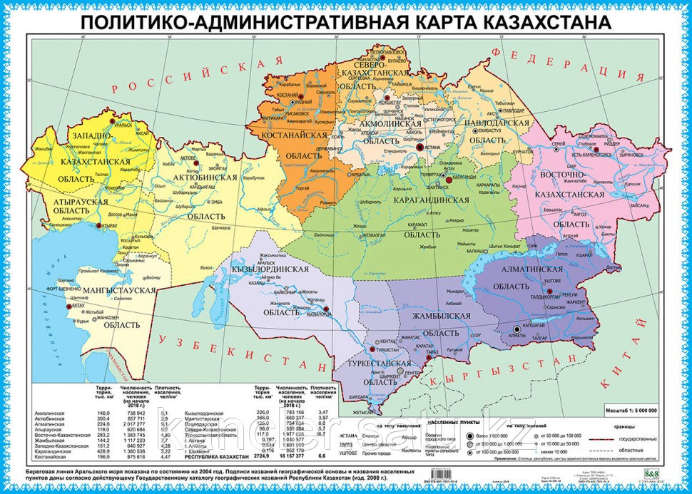
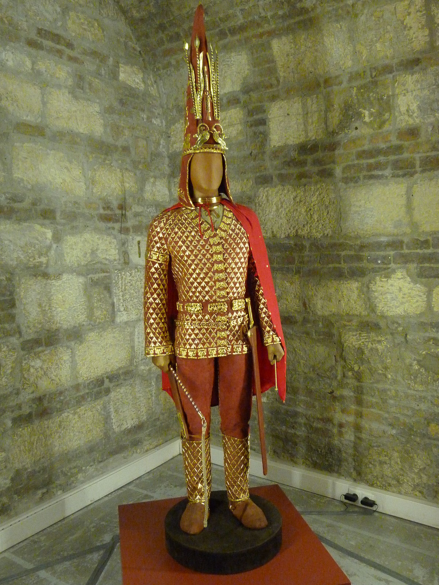

History of Kazakhstan
Kazakhstan, the largest country fully within the Eurasian Steppe, has been a historical crossroads and home to numerous different peoples, states and empires throughout history.
Overview
Human activity in the region began with the extinct Pithecanthropus and Sinanthropus one million–800,000 years ago in the Karatau Mountains and the Caspian and Balkhash areas. Neanderthals were present from 140,000 to 40,000 years ago in the Karatau Mountains and central Kazakhstan. Modern Homo sapiens appeared from 40,000 to 12,000 years ago in southern, central and eastern Kazakhstan. After the end of the last glacial period (12,500 to 5,000 years ago) human settlement spread across the country and led to the extinction of the mammoth and the woolly rhinoceros. Hunter-gatherer communes invented bows and boats and used domesticated wolves and traps for hunting. The Neolithic Revolution was marked by the appearance of animal husbandry and agriculture, giving rise to the Atbasar,[1] Kelteminar,[1] Botai,[1] and Ust-Narym cultures.[1] The Botai culture (3600–3100 BC) is credited with the first domestication of horses, and ceramics and polished-stone tools also appeared during this period. The fourth and third millennia witnessed the beginning of metal production, the manufacture of copper tools and the use of casting molds. In the second millennium BC ore mining developed in central Kazakhstan. The change in climate forced the massive relocation of populations in and out of the steppe belt. The dry period that lasted from the end of the second millennium to the beginning of the 1st millennium BC caused the depopulation of the arid belts and river-valley oasis areas, the populations moving north to the forest steppe. Approximate extent of Scythia within the area of distribution of Eastern Iranian languages (shown in orange) in the 1st century BC. After the end of the arid period at the beginning of the first millennium BC nomadic populations migrated into Kazakhstan from the west and the east, repopulating abandoned areas. They included several Indo-Iranians, often known collectively as the Saka.[2][3] During the fourth century AD the Huns controlled Kazakhstan, absorbing 26 independent territories and uniting a number of steppe and forest peoples into a single state. The Huns migrated west. The future Kazakhstan was absorbed into the First Turkic Khaganate and successor states. Several independent states flourished in Kazakhstan during the Early Middle Ages; the best-known were the Kangar Union, Western Turkic Khaganate, the Oghuz Yabgu State and the Kara-Khanid Kaganate. In the 13th century Kazakhstan was under the dominion of the Mongol Empire and remained in the sphere of Mongol successor states for 300 years. Portions of the country began to be annexed by the Russian Empire in the 16th century, the remainder gradually being absorbed into Russian Turkestan beginning in 1867. The modern Republic of Kazakhstan became a political entity during the 1930s Soviet subdivision of Russian Turkestan.
Prehistory
Humans have inhabited Kazakhstan since the Lower Paleolithic, generally pursuing the nomadic pastoralism for which the region's climate and terrain are suitable.[4] Prehistoric Bronze Age cultures that extended into the region include the Srubna, the Afanasevo and the Andronovo. Between 500 BC and 500 AD Kazakhstan was home to the Saka and the Huns, early nomadic warrior cultures. According to the Journal of Archaeological Science, in July 2020 scientists from South Ural State University studied two Late Bronze Age horses with the aid of radiocarbon dating from Kurgan 5 of the Novoilinovsky 2 cemetery in the Lisakovsk city in the Kostanay region. Researcher Igor Chechushkov indicated that the Andronovites were riding horses several centuries earlier than many researchers had previously assumed. Among the horses investigated, the stallion was nearly 20 years old and the mare was 18 years old. According to scientists, animals were buried with the person they accompanied throughout their lives, and they were used not only for food but also for harnessing to vehicles and riding.
First to eighth centuries
At the beginning of the first millennium the steppes east of the Caspian were inhabited and settled by a variety of peoples, mainly nomads speaking Indo-European and Uralic languages, including the Alans, Aorsi, Budini, Issedones/Wusun, Madjars, Massagetae and Sakas. The names, relations between and constituents of these peoples were sometimes fluid and interchangeable. Some of them formed states, including Yancai (northwest of the Aral Sea) and Kangju in the east. Over the course of several centuries the area became dominated by Turkic and other exogenous languages, which arrived with nomad invaders and settlers from the east. Following the entry of the Huns many of the previous inhabitants migrated westward into Europe or were absorbed by the Huns. The focus of the Hun Empire gradually moved westward from the steppes into Eastern Europe. For a few centuries events in the future Kazakhstan are unclear and frequently the subject of speculation based on mythic or apocryphal folk tales popular among various peoples that migrated westward through the steppes. From the middle of the 2nd Century the Yueban – an offshoot of the Xiongnu and therefore possibly connected to the Huns – established a state in far-eastern Kazakhstan. Over the next few centuries peoples such as the Akatziri, Avars (known later as the Pannonian Avars; not to be confused with the Avars of the Caucasus), Sabirs and Bulgars migrated through the area and into the Caucasus and Eastern Europe. By the beginning of the 6th century the proto-Mongolian Rouran Khaganate had annexed areas that were later part of east Kazakhstan. The Göktürks, a Turkic people formerly subject to the Rouran, migrated westward, pushing the remnants of the Huns west and southward. By the mid-6th Century, the Central Eurasian steppes had become controlled by the First Turkic Khaganate, also known as the Göktürk Khaganate. A few decades later, a civil war resulted in the khaganate being split, and establishment of the Western Turkic Khaganate, under the Onogur tribes and Eastern Turkic Khaganate (under the Göktürks). In 659, the Western Turkic Khaganate was ended by the Tang Empire. Towards the end of the 7th Century, the two states were reunited in the Second Turkic Khaganate. However, the khaganate began to fragment only a few generations later. In 766 the Oghuz Yabgu State (Oguz il) was founded, with its capital in Jankent, and came to occupy most of the later Kazakhstan. It was founded by the Oghuz Turks refugees from the neighbouring Turgesh Kaganate. The Oghuz lost a struggle with the Karluks for control of Turgesh, other Oguz clans migrated from the Turgesh-controlled Zhetysu to the Karatau Mountains and the Chu valley, in the Issyk Kul basin.
Cuman-Kipchak period
In the eighth and ninth centuries, portions of southern Kazakhstan were conquered by Arabs who introduced Islam. The Oghuz Turks controlled western Kazakhstan from the ninth through the 11th centuries; and Turkic peoples of Kipchaks and Kimaks, controlled the east at roughly the same time. In turn the Cumans controlled western Kazakhstan from around the 12th century until the 1220s. Since then, those vast lands are came to be known as Dashti-Kipchak, or the Kipchak Steppe.[4] During the ninth century the Qarluq confederation formed the Qarakhanid state, which conquered Transoxiana (the area north and east of the Oxus River, the present-day Amu Darya). Beginning in the early 11th century, the Qarakhanids fought constantly among themselves and with the Seljuk Turks to the south. The Qarakhanids, who had converted to Islam, were conquered in the 1130s by the Kara-Khitan (a Mongol people who moved west from North China. In the mid-12th century an independent state of Khorazm along the Oxus River broke away from the weakening Karakitai, but the bulk of the Kara-Khitan lasted until the Mongol invasion of Genghis Khan from 1219 to 1221